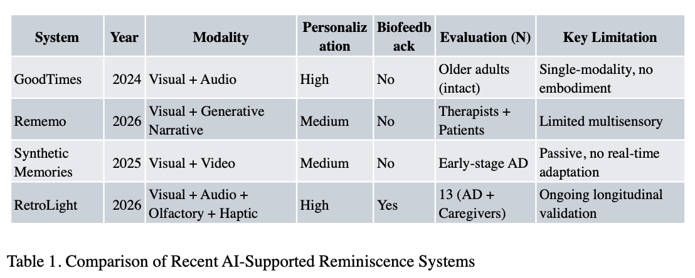
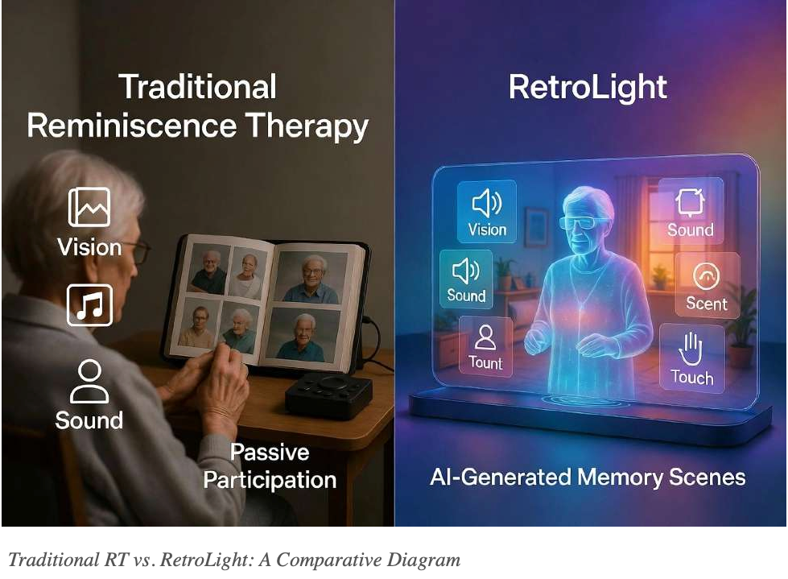
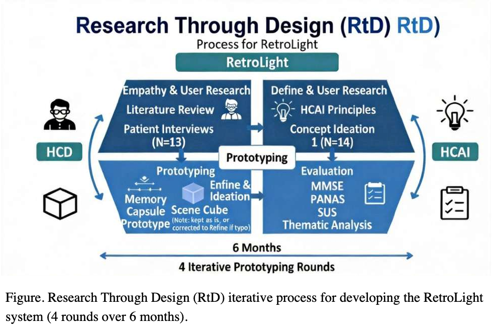
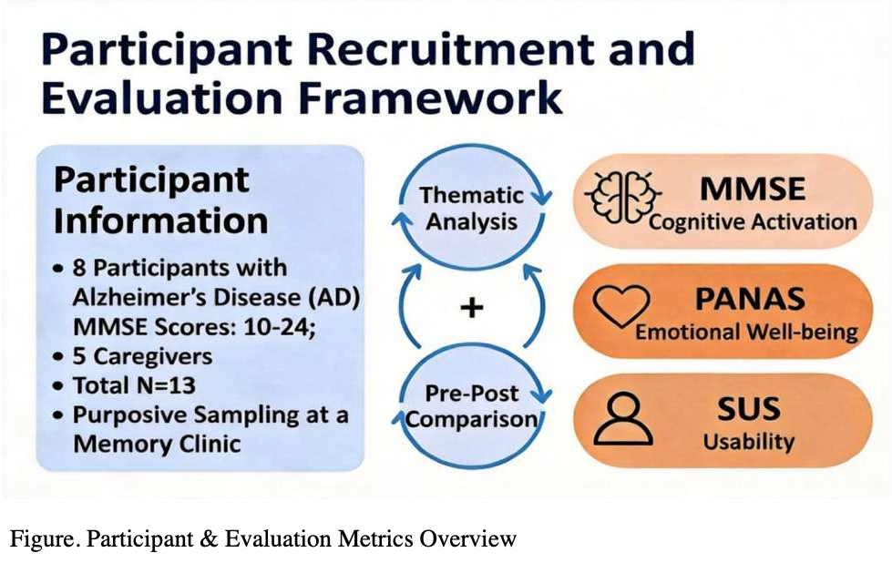
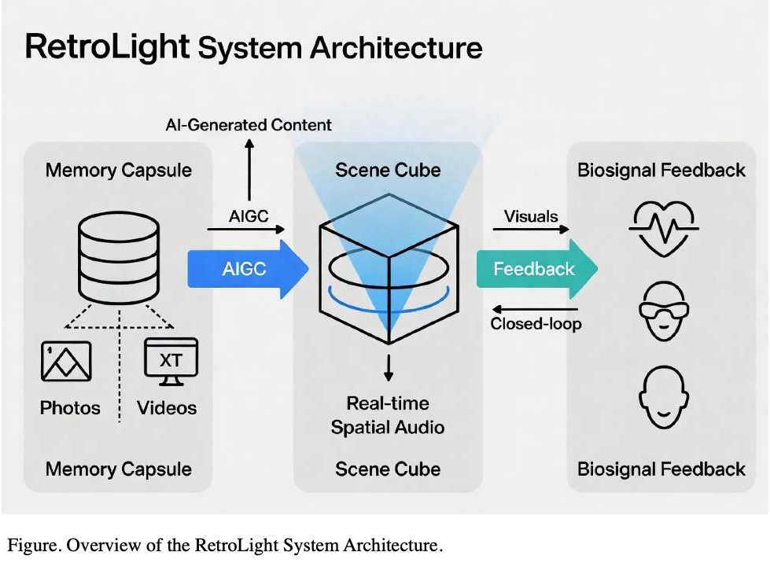
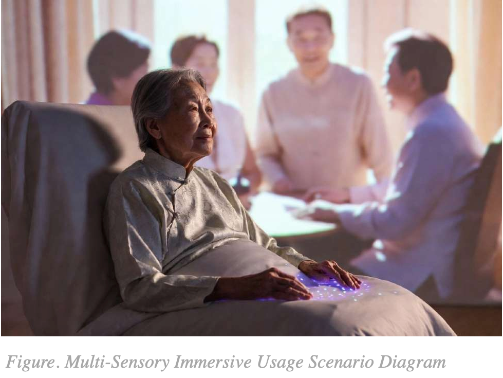
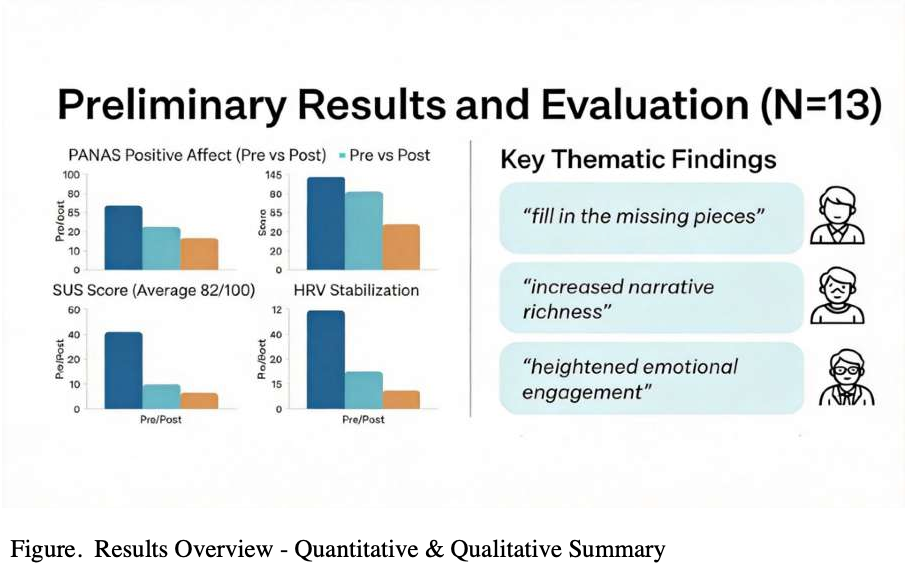
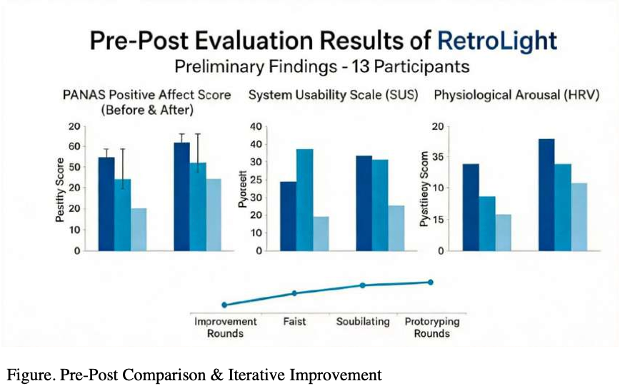

Artificial Intelligence for Recalling and Reconstruction of Fragmented Memories: Human-Centered Design of Memory Recall Interventions for Alzheimer's Disease
Macau University DDES 2025 · Mentor: Professor Luo Xuan · Student: Liu Jia Qun (MC569293)
Abstract
Alzheimer’s disease frequently leads to severe memory loss, and traditional reminiscence therapy utilizes cues such as old photographs and music to stimulate long-term memories. Although this approach can improve the well-being of older adults, it is often limited by single-modality delivery and a lack of personalization [1][2]. This study examines the integration of AI-generated content (AIGC) with multisensory interaction to reconstruct fragmented memory scenes dynamically.
This paper introduces RetroLight, a personalized and immersive, AI-powered multisensory memory-activation system. The system is built upon a “memory capsule” database that collects patients’ fragmented memories, including photographs, videos, sounds, scents, and tactile sensations, and a “scene cube” device that projects 360-degree panoramic visuals, spatial audio, and olfactory stimuli [3]. Methodologically, RetroLight employs human-centered design (HCD) alongside principles of human-centered AI (HCAI). Through iterative prototyping and participatory evaluation, the study assesses its effects on cognitive activation, opportunities, and well-being. Expected outcomes include novel approaches to memory reconstruction in cognitive interventions, innovative pathways for non-pharmacological interventions, and a reference model for AI-assisted, inclusive smart health systems.
Keywords: Human-Centered AI (HCAI) · AI-Generated Content (AIGC) · Memory Reconstruction · Multisensory Interaction · Reminiscence Therapy (RT) · Alzheimer’s Disease (AD) · Research through Design (RTD) · Therapeutic Immersive Technology · Emotional Well-being · Inclusive Health Design
1. Introduction
Alzheimer’s Disease (AD) and related dementias constitute a global health crisis, currently affecting over 55 million individuals worldwide, with prevalence projected to double within the next three decades due to population aging [4]. These neurodegenerative disorders cause progressive memory loss, language impairments, spatial disorientation, and personality changes, which collectively diminish patient independence and personhood. While pharmacological interventions provide symptomatic relief, their side effects and limited efficacy have sparked increased interest in non-pharmacological approaches.
Reminiscence Therapy (RT) is a well-established non-pharmacological intervention that utilizes photographs, music, or personally meaningful objects to stimulate long-term memory [1]. However, traditional RT faces three primary challenges: modality singularity, often relying solely on visual or auditory stimuli and failing to engage complex multisensory memory; lack of interactivity, with patients remaining largely passive; and insufficient personalization, which limits effectiveness for individuals with fragmented or long-lost early memories.
Recent advances in Generative AI (AIGC) and immersive interaction technologies open new possibilities for memory reconstruction rather than mere retrieval. This study introduces RetroLight, a personalized, multisensory, AI-powered memory-activation system designed to address these gaps through Human-Centered AI (HCAI) and Research through Design (RtD).
2. Related Work (Literature Review)
Recent research in medical and cognitive science demonstrates that reminiscence therapy (RT) is effective for addressing cognitive impairment. Systematic reviews and meta-analyses indicate that RT significantly improves cognitive function (SMD 0.74–1.15), reduces depressive symptoms, and enhances quality of life, with particularly notable benefits for individuals with mild cognitive impairment (MCI) [5][6][7].
Advancements in artificial intelligence (AI) have begun to address previously identified limitations in modality and personalization. Wang et al. (2024) introduced GoodTimes, a multimodal AI photo album that uses knowledge graphs and voice assistants to enable personalized dialogue [8][9]. Seah et al. (2026) presented Rememo at CHI 2026, a generative AI tool developed with therapist involvement that supports authentic memories to facilitate co-constructed narratives [10][11]. The Synthetic Memories project by Domestic Data Streamers (2025) employs generative AI to reconstruct images and videos from oral fragments and has been implemented in early-stage dementia reminiscence therapy [12][13].

Multisensory stimulation further strengthens therapeutic outcomes. Engaging multiple senses simultaneously (vision, hearing, touch, smell, and even taste) activates broader neural networks, particularly the limbic system. Olfactory pathways project directly to the amygdala and hippocampus, bypassing the thalamus and enabling rapid activation of emotional and autobiographical memories [16][24]. Tactile stimulation, mediated by mechanoreceptors and C-tactile afferents, triggers oxytocin release and enhances interoceptive awareness, which is often impaired in Alzheimer’s disease (AD) [25][26][27].
3. Design Opportunities Identified in the Literature
A review of the literature identifies three primary design opportunities that inform the development of the RetroLight system.
- Personalized memory reconstruction through generative AI: Although systems such as GoodTimes and Rememo demonstrate the potential of AI-generated content (AIGC) to fill visual and narrative gaps [8][11], they remain largely unimodal and lack real-time adaptation to emotional states. This gap motivates RetroLight’s Memory Capsule, which synthesizes multimodal fragments into context-aware prompts.
- Multisensory immersion to enhance emotional engagement: While multisensory stimulation (including olfactory and tactile cues) has shown strong clinical benefits, existing AI reminiscence tools rarely incorporate haptic or olfactory channels. This limitation highlights the opportunity for RetroLight’s Scene Cube to deliver ecologically valid, embodied memory experiences.
- Biofeedback-driven closed-loop interaction for safety and reliability: Current systems lack real-time physiological monitoring, risking emotional overload. Building on human-centered AI (HCAI) principles [10], RetroLight introduces a closed-loop biosignal feedback mechanism to maintain high human control while ensuring emotional safety.

4. Research Through Design Methodology
The existing literature on Human-Centered Design (HCD) and Human-Centered AI (HCAI) emphasizes the need to prioritize users, such as patients, caregivers, and therapists, in dementia care technology development. RetroLight was developed using a human-centered design (HCD) framework that integrates Research Through Design (RtD) and Shneiderman’s HCAI principles. Four iterative prototyping rounds were conducted over six months.


5. RetroLight System Design
The system comprises three primary modules in a closed-loop architecture: (1) the Memory Capsule — a database collecting patients’ fragmented memories (photographs, videos, sounds, scents, and tactile sensations); (2) the Scene Cube — a device delivering 360-degree panoramic visuals, spatial audio, and olfactory stimuli; and (3) Biosignal Feedback for real-time closed-loop adaptation. Data flow and dynamic adaptation are managed by artificial intelligence-generated content (AIGC).

Programmable scent diffusers and haptic feedback recreate previous living environments. This methodology is intended to support memory reconstruction for individuals with cognitive impairments through multi-sensory immersive experiences.

6. Preliminary Results and Evaluation
Evaluation involved 13 participants (8 patients with Alzheimer’s disease, MMSE scores 10–24, and 5 caregivers) recruited via purposive sampling at a memory clinic. Metrics included MMSE (cognitive activation), PANAS (emotional well-being), and SUS (usability). Qualitative thematic analysis identified key findings around filling missing pieces of memory, increased narrative richness, and heightened emotional engagement.


7. Discussion and Conclusion
The findings indicate that the AI-enhanced multisensory RetroLight system may transform traditional reminiscence therapy (RT) into a more active, personalized, and emotionally engaging intervention. Outcomes of richer narratives and deeper emotional engagement correspond with the three design opportunities identified in Section 3 and are substantiated by the preliminary results presented in Section 6. The system extends previous work on generative AI by emphasizing embodiment, real-time human–AI collaboration, and closed-loop safety for therapeutic design in aging and accessibility contexts.